Overview
Abstract
Dynamic Graph Neural Networks (DGNNs) enable learning from evolving graphs by capturing both structural and temporal dependencies. However, training DGNNs at scale is challenging due to three conflicting requirements: maximizing resource utilization, minimizing data transfers, and maximizing data reuse. Existing systems typically optimize one objective at the expense of the others, leading to communication bottlenecks, load imbalance, or redundant computation.
We present Real, a reuse-aware distributed system for DGNN training that jointly addresses these challenges. Real minimizes data transfers via snapshot-group scheduling, and leverages an incremental aggregation mechanism to decouple computation from structural updates, effectively pruning redundant I/O and FLOPs via snapshot- and group-level reuse. We further design two complementary schedulers: Real-L, an ILP-based optimizer for globally optimal planning, and Real-G, a scalable greedy heuristic. Experiments on six dynamic graph datasets and four DGNN models show that Real-L and Real-G achieve 1.11×–3.26× and 1.10×–3.16× speedup over the strongest baseline.
Motivation
A trilemma no existing system resolves
Distributed DGNN training has to keep every GPU busy, move as little data as possible (both across GPUs and over PCIe), and reuse as much work as possible between nearly identical snapshots. These goals conflict. Fine-grained partitioning balances load but multiplies transfers, and enforcing reuse makes it harder to spread work evenly.
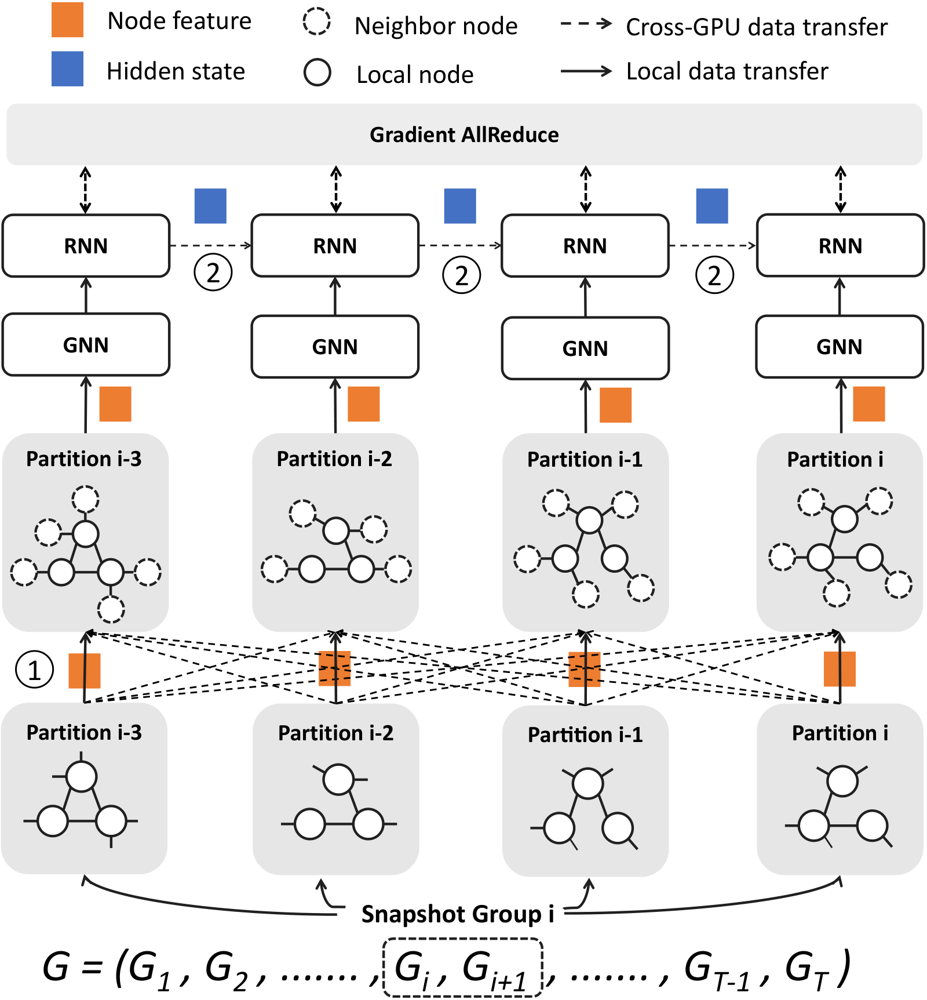
Where the time goes
A DGNN layer first runs spatial aggregation over each snapshot (a GNN such as GCN or GAT), then temporal evolution (an RNN such as LSTM or GRU) that carries a hidden state from snapshot to snapshot. Sequences of snapshots are cut into snapshot groups, the basic training unit.
- 1Neighbor-feature transfer. When a snapshot is partitioned, boundary nodes must fetch neighbor features from remote GPUs before aggregation can start.
- 2Hidden-state transfer. When consecutive snapshots sit on different GPUs, the RNN needs \(h_{t-1}\) from another device, which is a strict sequential barrier.
- 3Gradient AllReduce. Parameters are synchronized after every backward pass. This is the only transfer Real keeps.
How existing systems compare
| Category | Dimension | AliGraph | DistDGL | ESDG | DGC | BLAD | DynaHB | Real |
|---|---|---|---|---|---|---|---|---|
| Data transfer | No neighbor-feature transfer | ✕ | ✕ | ✓ | ✕ | ✓ | ✓ | ✓ |
| No hidden-state transfer | ✓ | ✓ | ✕ | ✕ | ✓ | ✓ | ✓ | |
| No extra CPU–GPU transfer | ✓ | ✓ | ✓ | ✓ | ✓ | ✕ | ✓ | |
| Resource util. | Resource-level parallelism | ✕ | ✕ | ✕ | ✕ | ✓ | ✕ | ✓ |
| Load balance | ✓ | ✓ | ✕ | ✓ | ✕ | ✓ | ✓ | |
| Data reuse | Topology-aware reuse | ✕ | ✕ | ✕ | ✕ | ✕ | ✕ | ✓ |
Partitioning snapshots costs transfers
Vertex-based partitioning (DistDGL) balances load by spreading nodes, but fragments every snapshot, so neighbor features cross GPUs at every message-passing step.
Snapshot-based partitioning (ESDG) keeps aggregation local, but ships hidden states between GPUs, and the RNN's sequential dependency leaves GPUs idling while they wait.
Profiling WD-GCN on three real datasets: inter-GPU transfer takes 34% of forward time for DistDGL, and 81% for ESDG (including idle time).
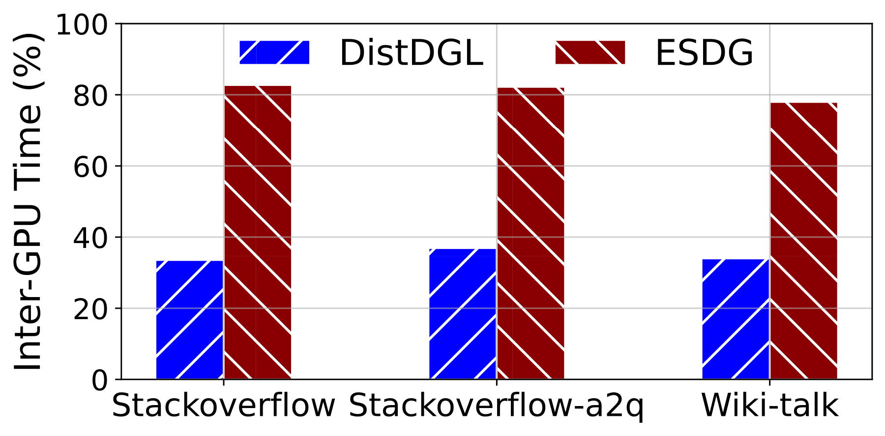
Locality alone leaves GPUs unevenly loaded
Group-based partitioning (BLAD) processes each snapshot group on a single GPU, which removes both neighbor-feature and hidden-state transfers.
But variations in graph size and structure accumulate inside a group. Some GPUs finish early and sit idle until the slowest one is done.
On Stackoverflow, ESDG under-utilizes all GPUs, while BLAD shows uneven utilization caused by load imbalance.
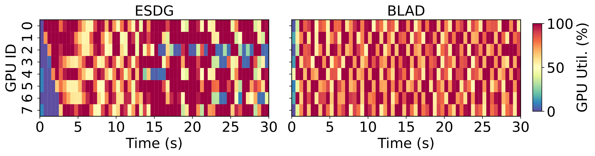
Existing reuse doesn't scale or generalize
Adjacent snapshots share most of their topology, yet distributed systems redo full GraphConv on every one. Single-GPU PiPAD reuses the global intersection of all snapshots, but that intersection shrinks fast. reINC prunes work incrementally but ignores load balance.
Neither handles attention-based GNNs: GAT's softmax couples every neighbor of a node, so it can't be maintained from incremental changes alone.
With a fixed 5–15% edge change rate, the global intersection drops below 20% after 30 snapshots.
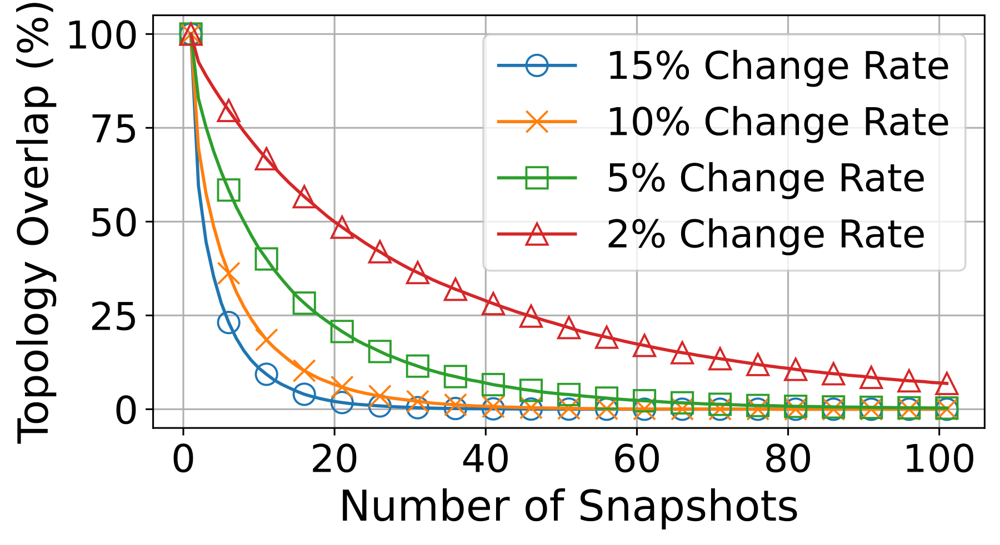
System design
Groups as the unit, reuse at two levels
The key insight is that different snapshot groups are independent samples in DGNN training. They can be combined freely and scheduled in any order. Real builds on this in three ways.
Minimize data transfer
Snapshot-group partitioning confines cross-GPU traffic to gradient synchronization. Reusable structures cut redundant CPU→GPU copies.
Maximize data reuse
Topology similarity is exploited both between adjacent snapshots (Type I) and between co-scheduled groups (Type II).
Maximize utilization
A triple-stream pipeline overlaps heterogeneous operators, and cross-group scheduling balances load across GPUs.
dmap). Degree–runtime cost curves, fitted once on synthetic graphs, then pick a full graph or its dmap for each snapshot, e.g. \([\mathcal{G}_i, \texttt{dmap}_{i+1}, \mathcal{G}_{i+2}, \texttt{dmap}_{i+3}]\).HtoD, Conv, MatMul, RNN and backward time over several epochs, dropping outliers. Estimates the reuse saving \(\mathcal{R}_{i,j}\) when groups \(i\) and \(j\) share a GPU.IncreConv and selective MatMul, overlapped on three CUDA streams.Type I Snapshot-level reuse
Consecutive snapshots are nearly identical. If a node's neighborhood didn't change, its aggregated feature didn't either, and multiplying it by the same weights again is wasted work. Real decouples aggregation from transformation in GraphConv and reuses both at the first GNN layer, where input features are time-invariant within a group.
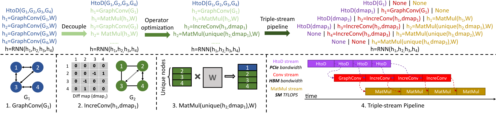
The dmap marks each edge as added (+1), removed (−1) or unchanged (0). Only changed edges contribute, on top of the cached aggregation that the RNN already keeps.
GCN weights need full-snapshot degrees. Each dmap node carries its degree in both snapshots, so no global edge-weight table is needed.
A single edge change alters the softmax denominator shared by all neighbors. Real caches \(\mathcal{D}_j\), updates it, and rescales the old aggregate in \(O(1)\).
Transformation reuse
Pre-aggregation (e.g. GAT): input features are time-invariant inside a group, so the projection is computed once and shared by all snapshots.
Post-aggregation (e.g. GCN): selective MatMul. Only nodes whose neighborhoods changed (found via dmap) are re-multiplied; the rest reuse cached results.
Triple-stream pipeline
Three CUDA streams stress three different resources, so they overlap across snapshots and are kept consistent with cudaEvents:
- HtoDPCIe bandwidth
- ConvHBM bandwidth
- MatMulSM TFLOPS
Type II Group-level reuse
Model parameters are frozen within an iteration. When two groups that share snapshots run on the same GPU in the same iteration, the shared snapshots stay resident: their HtoD copies and GraphConv are done once. The scheduler therefore reorders execution to chain overlapping groups instead of following a naive disjoint order.
G2 is loaded and convolved once and reused by both groups. Unlike Type I, this saving doesn't depend on the edge change rate, because whole snapshots are shared.
Cross-group scheduling
Balance load without giving up reuse
Given groups with standalone times \(t_k\), \(D\) GPUs and pairwise reuse savings \(\mathcal{R}_{k_1,k_2}\), Real chooses which groups share a GPU in each iteration (at most \(L = 2\) per GPU, bounded by memory and solver cost). The goal is to minimize the epoch time \(T = \sum_i T_i\).
Base compute minus the reuse benefit of co-located groups; \(x_{k,i,j} = 1\) puts group \(k\) on GPU \(j\) in iteration \(i\).
The slowest GPU plus synchronization overhead \(\alpha\). This generalizes makespan minimization on parallel machines, so the problem is NP-hard.
Globally optimizes the whole epoch's schedule. The nonlinear pieces are linearized:
- Assignment & capacity: each group is scheduled exactly once, \(\sum_k x_{k,i,j} \le L\).
- McCormick envelopes replace the logical AND with \(y_{k_1,k_2,i,j}\): \(y \le x_{k_1}\), \(y \le x_{k_2}\), \(y \ge x_{k_1} + x_{k_2} - 1\).
- Epigraph min-max instead of Big-M: \(T_i \ge \mathcal{L}_{i,j} + \alpha\) for every \(j\), a tighter relaxation.
Stops at a preset optimality gap (e.g. 10%).
A scalable heuristic that builds one iteration at a time and minimizes wasted GPU time (bubbles):
- Add a zero group \(t_0 = 0\) so any group may run alone, then sort by time.
- Pair the longest group with every other group to get candidate makespans \(\mathcal{T}\).
- For each \(\mathcal{T}\), a two-pointer search picks the \(D - 1\) pairs closest to it; keep the plan with the least waste.
A few seconds even at \(n \sim 10^3\) groups.
estimate \(T_{\text{epoch}}\)
time limit \(\tau = 2 \times T_{\text{epoch}}\)
if no feasible ILP plan in time
Bounding the solver by \(\tau\) caps scheduling overhead while letting as many epochs as possible run an optimized plan.
Evaluation
Faster on every model and dataset
Datasets (Table II)
| Dataset | \(\overline{|\mathcal{V}|}\) | \(\overline{|\mathcal{E}|}\) | \(\overline{|\mathcal{V}_d|}\) | \(\overline{|\mathcal{E}_d|}\) | \(d_v\) | \(\beta\) | \(\gamma\) |
|---|---|---|---|---|---|---|---|
| Arxiv | 169.3k | 1.8M | 88.7k | 242.6k | 128 | 10.6 | 100 |
| Products | 2.4M | 36.7M | 1.5M | 5.9M | 100 | 15.0 | 100 |
| 232.9k | 31.9M | 211.6k | 5.5M | 602 | 137.3 | 100 | |
| Stackoverflow | 2.6M | 23.1M | 790.3k | 3.1M | 128 | 8.9 | 100 |
| Stackoverflow-a2q | 2.5M | 10.8M | 554.3k | 1.5M | 128 | 4.4 | 100 |
| Wiki-talk | 1.1M | 6.3M | 182.8k | 439.4k | 128 | 5.5 | 100 |
| Arxiv† | 169.3k | 1.8M | 89.3k | 245.9k | 128 | 10.6 | 300 |
| Products† | 2.2M | 18.6M | 1.6M | 3.6M | 100 | 7.6 | 300 |
Per-snapshot averages of nodes and edges, the same per dmap, feature dimension \(d_v\), average degree \(\beta\) and snapshot count \(\gamma\). Arxiv, Products and Reddit are made dynamic by randomly changing edges, following BLAD. The snapshot group size is 4 and the hidden dimension 64 for all runs.
Speedup explorer
Measured results from Figs. 7–8, re-normalized to the baseline you pickTable view
Values were read from the vector bars of the paper's Figs. 7–8, where they are normalized to ESDG. They reproduce the ranges and averages quoted in the paper to within ±0.02. EG/WG/TG/GL = EvolveGCN / WD-GCN / TGCN / GAT-LSTM. † = 300-snapshot variants used for the 32-GPU runs.
The paper's figures
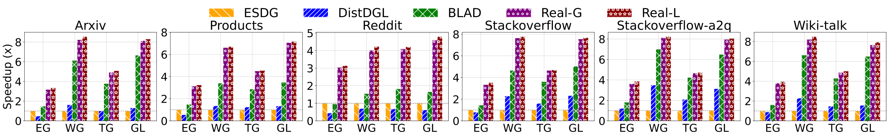
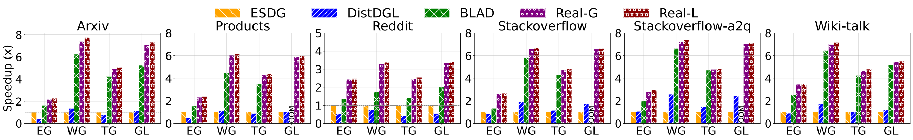
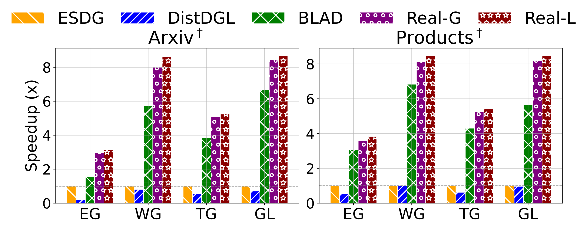
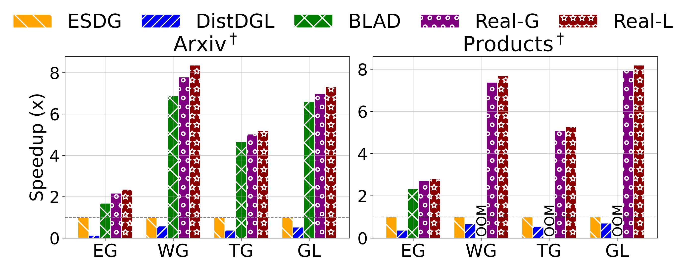
Where the savings come from
Data transfer, broken down
ESDG is dominated by hidden-state transfer and DistDGL by neighbor aggregation (worst on Reddit: degree 137, 602-d features). BLAD avoids both but still copies full graphs over PCIe. Real also avoids both and shrinks HtoD volume with dmap-based reuse.
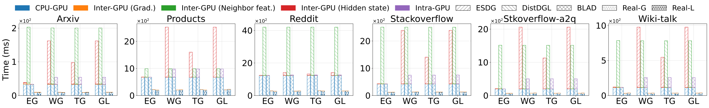
Redundant FLOPs, pruned
Computation is limited to incremental updates. Real-L needs 3.87×–20.80× (avg 11.64×) fewer GraphConv FLOPs than DistDGL, and 1.22×–5.74× (avg 2.87×) fewer than ESDG and BLAD, which convolve every full snapshot.
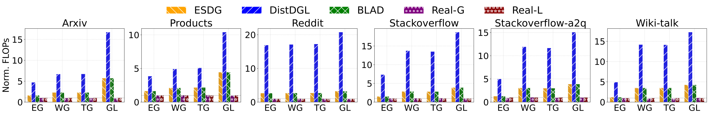
GraphConv FLOPs, normalized to Real-L.Ablation: every component pays off
Cumulative speedup over PSG (one group per GPU per iteration, no reuse, no balancing)Each bar spans the minimum to maximum speedup across models and datasets. Type II pairs consecutive groups by default, which can unbalance load; the cross-group scheduler restores balance and keeps the reuse. ILP's whole-epoch view adds the last step.
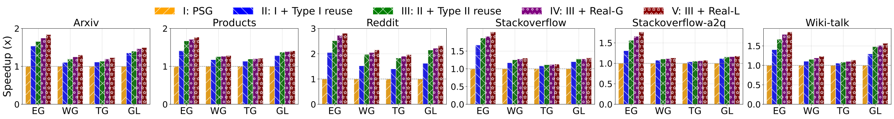
Balanced, busy GPUs
Over the first 30 s of training, Real-L keeps utilization high on all GPUs. The triple-stream pipeline hides data movement, and cross-group scheduling evens out the per-GPU load.
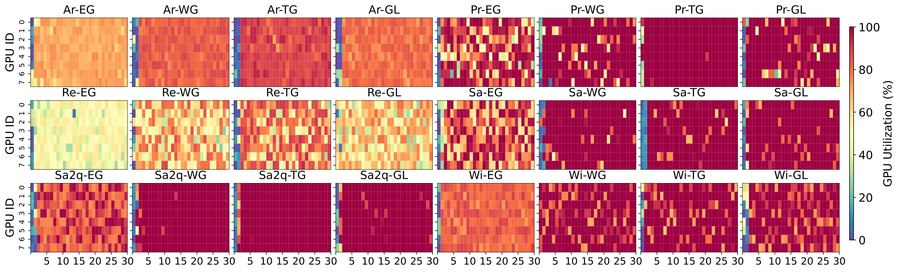
Same accuracy, same convergence
Pairing two groups per GPU doubles the effective batch (\(K = 2\)), so the learning rate is scaled up proportionally. Under \(L\)-smoothness and bounded variance, gradient variance shrinks by \(\tfrac{1}{NK}\) and training converges at the standard \(\mathcal{O}(1/\sqrt{T})\) rate.
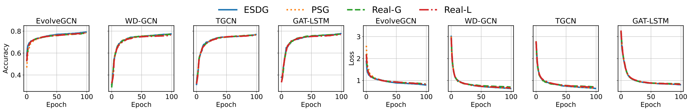
Scope of reuse
Both reuse types apply at the first GNN layer, where inputs are time-invariant within a group. The GAT variant is exact. The GCN variant omits a second-order re-normalization of unchanged neighbors, which has an empirically negligible effect. Deeper layers are recomputed in full, which is why 2-layer gains are smaller.
Sensitivity to available reuse
Type I savings shrink as edges change faster. Once a dmap stops being sparse, the preprocessor falls back to full GraphConv instead of paying a penalty. Type II doesn't depend on the change rate. Real therefore degrades gracefully toward a reuse-free but load-balanced scheduler.
Paper & citation
Read the paper
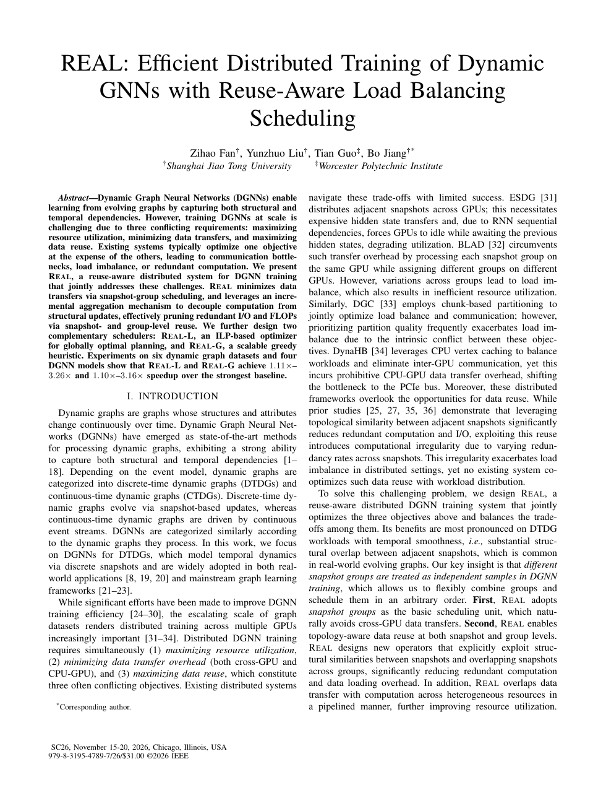
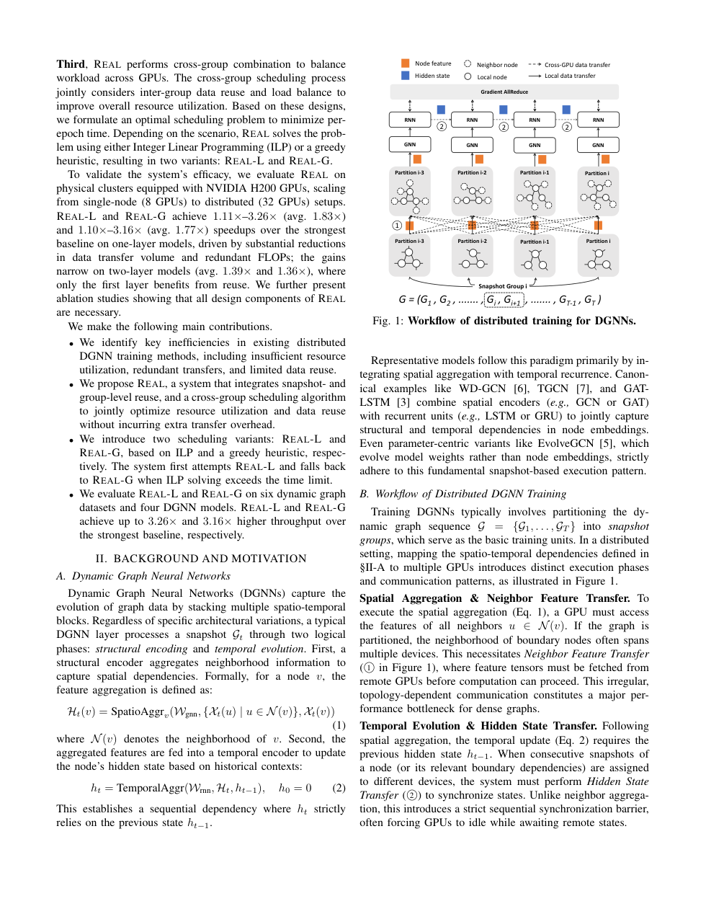
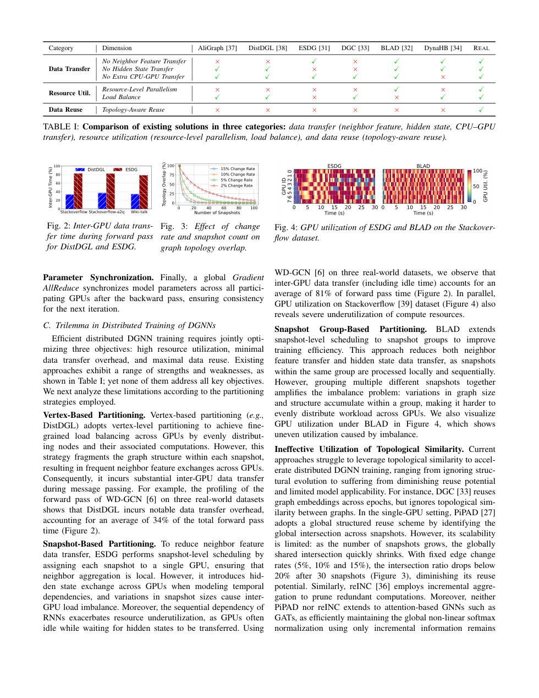
REAL: Efficient Distributed Training of Dynamic GNNs with Reuse-Aware Load Balancing Scheduling
@inproceedings{fan2026real,
title = {REAL: Efficient Distributed Training of Dynamic GNNs with
Reuse-Aware Load Balancing Scheduling},
author = {Fan, Zihao and Liu, Yunzhuo and Guo, Tian and Jiang, Bo},
booktitle = {Proceedings of the International Conference for
High Performance Computing, Networking, Storage,
and Analysis (SC '26)},
year = {2026}
}